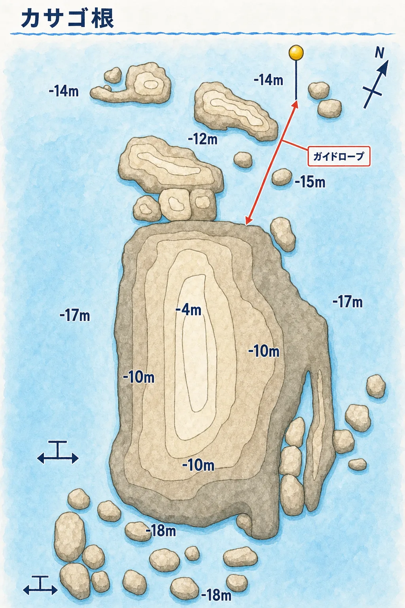
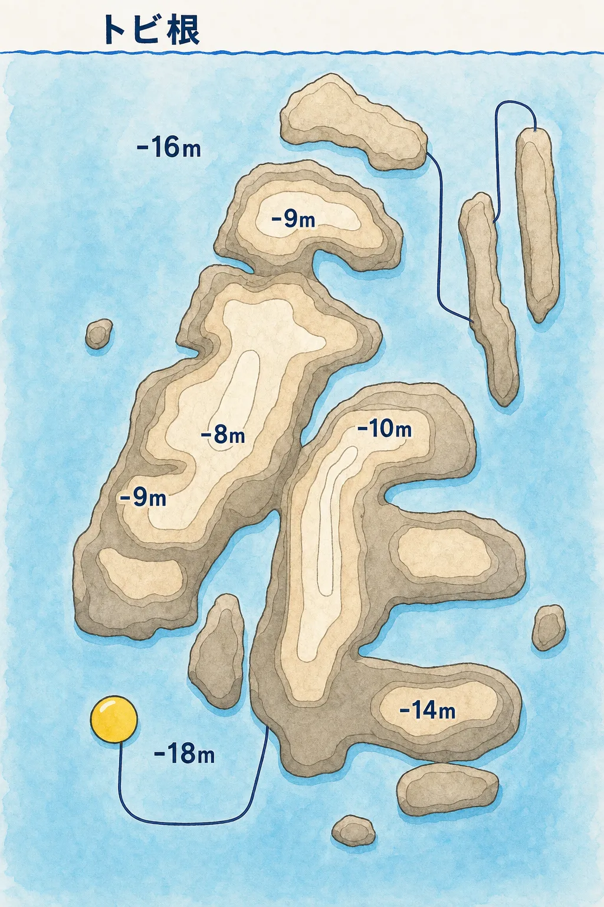

カサゴ根
水深 約4〜18m大きな根がドンと沈む、明るい砂地に囲まれたポイント。ブイからガイドロープ沿いに根へ向かうので、ボートダイビングが初めてでも安心です。名前の通りカサゴの仲間が多く、じっくり探すマクロ派にも人気。毎年5〜6月にはアオリイカの産卵床が設置され、運が良ければ産卵シーンに立ち会えることも。
- カサゴの仲間・コケギンポ類
- タツノオトシゴ・ハナタツ
- アオリイカの産卵（5〜6月）
- 夏〜秋は季節来遊魚も

Cカード保持者向け、三浦半島のスクーバダイビング。
ブランクダイバーも少人数制で安心サポート。
横須賀・三浦半島エリアの多彩なダイビングポイントへ。
目的に合わせて3つのコースからお選びください。1日で3本・4本潜るプランもご用意しています。


穏やかな三浦のビーチでの2ダイブ。エントリーしやすく初ファンダイビングにもおすすめ。
ボートでしか行けないダイナミックなポイントへ。2ボートダイブで三浦の海を満喫。
久しぶりの方にぴったり！器材の使い方や基本スキルを丁寧に復習してから1ダイブ。
「経験本数を増やしたい」「AOWに向けて本数を稼ぎたい」という方は、1日で3本・4本のファンダイビングもお選びいただけます。
| コース | 料金（税込） |
|---|---|
| 2ビーチダイビング | ¥13,200 |
| 3ビーチダイビング | ¥18,700 |
| 4ビーチダイビング本数を稼ぎたい方に | ¥24,200 |
| コース | 料金（税込） |
|---|---|
| 2ボートダイビング | ¥19,800 |
| 3ボートダイビング | ¥28,600 |
| 2ボート＋1ビーチ | ¥25,300 |
※料金はすべて税込です。レンタル器材代（フルセット¥5,500）は別途必要です。
※3本以上をご希望の場合は、ご予約時に希望の本数をお知らせください。1日のスケジュールを調整してご案内します。
※当日の海況や体調によっては、安全のため本数を変更させていただく場合があります。
2日間・5ダイブ（3ビーチ＋2ボート／ボートの乗船料込み）で、中性浮力・水中ナビゲーション・ディープを実践で身につけるコース。
9/30までのLINE特典で器材レンタル1日分（¥5,500）が無料になり、総額 ¥70,800 → ¥65,300（税込）。ブランクのある方は1本目を慣らしから始められます。
ビーチ ¥13,200 → ¥12,400／ボート ¥19,800 → ¥19,000／リフレッシュ ¥19,800 →
¥19,000（税込）。
対象はファンダイビング全コース。日程変更は空きがあれば無料、バディ割や夏割との併用もできます。
ビーチ ¥13,200 → ¥6,600（半額）／ボート ¥19,800 → ¥13,200（税込）。
ご紹介いただいたお友達も、ライセンス講習の器材レンタル1日分（¥5,500）が無料になります。
城ヶ島をメインにご案内します。海況によって他ポイントに変更する可能性があります。
宮川湾（カサゴ根・トビ根）または城ヶ島がメインです。海況によって他ポイントに変更する可能性があります。
港から船でわずか5分。最大水深18mで、ボートダイビングデビューにもぴったりのポイントです。

大きな根がドンと沈む、明るい砂地に囲まれたポイント。ブイからガイドロープ沿いに根へ向かうので、ボートダイビングが初めてでも安心です。名前の通りカサゴの仲間が多く、じっくり探すマクロ派にも人気。毎年5〜6月にはアオリイカの産卵床が設置され、運が良ければ産卵シーンに立ち会えることも。

いくつもの根が入り組んだ、ダイナミックな地形が魅力のポイント。根の間を縫うように泳ぐコース取りが楽しく、夏は根の上をネンブツダイの大群が覆い尽くします。岩壁のソフトコーラルにはガラスハゼやトラフケボリなど小さな生き物がいっぱい。
手ぶらでOK！フルセットレンタルもご用意しています。

ウエットスーツの下に着用
ダイビング後に使用
ダイビングライセンス
ダイブ記録に
三浦 海の学校のファンダイビングは、Cカード（ダイビングライセンス）をお持ちの方向けのスクーバダイビングサービスです。神奈川県三浦市・三浦半島の多彩なダイビングポイントで、ビーチダイビング・ボートダイビングをお楽しみいただけます。横須賀エリアからもアクセス良好で、久里浜駅から電車で約11分です。
ボートダイビングのメインポイントは宮川湾の「カサゴ根」「トビ根」。港から船で約5分、最大水深18mの根のポイントで、カサゴやタツノオトシゴなどのマクロ生物から、夏のネンブツダイの群れ、5〜6月のアオリイカの産卵まで、季節ごとに違う表情の海を楽しめます。
半年以上のブランクがある方には、リフレッシュダイビングコースがおすすめです。器材の使い方や基本スキルを確認し、その日の海況と経験に合わせて進めます。少人数制で、一人ひとりのペースに合わせたダイビングをサポートします。